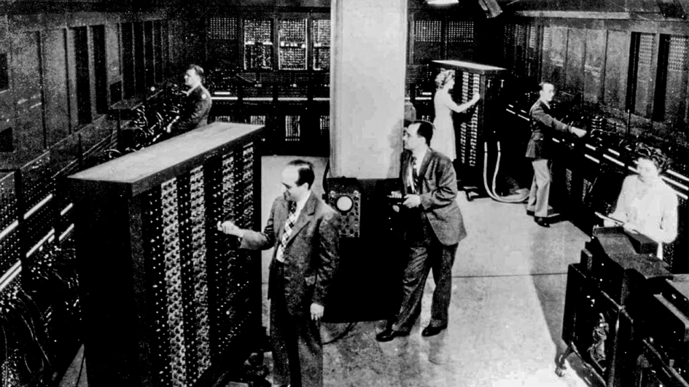

O Primeiro Computador
O ENIAC (Electronic Numerical Integrator and Computer), o primeiro computador eletrônico digital de larga escala, marcou um avanço significativo na computação. Desenvolvido a pedido do Exército dos Estados Unidos para seu laboratório de pesquisa balística durante a Segunda Guerra Mundial, o ENIAC visava acelerar e automatizar o processo de cálculo de tabelas de disparo para artilharia, um aspecto crucial para determinar a trajetória de projéteis e garantir a precisão das armas.

Pesando cerca de 30 toneladas e ocupando uma área de 180 m², o ENIAC foi um verdadeiro gigante da época. Sua produção custou cerca de US$ 500 mil em 1940, o que equivale a aproximadamente US$ 6 milhões hoje. O computador era equipado com 70 mil resistores e 18 mil válvulas de vácuo, consumindo impressionantes 200 mil watts de energia. Seu “sistema operacional” era baseado em cartões perfurados, manipulados por um time de funcionárias do exército, que se tornaram as primeiras programadoras documentadas.
A construção do ENIAC começou em 1943 e, apesar de ter sido apresentado ao público em 1946, foi ligado pela primeira vez somente em julho de 1947. Embora sua capacidade de operação fosse menor do que a de qualquer calculadora moderna, o ENIAC realizou mais cálculos em seus 10 anos de operação do que toda a humanidade havia feito até então. No final de sua carreira, um computador rival com o dobro da capacidade custava apenas US$ 200 mil e ocupava apenas 10% do tamanho do ENIAC.Após sua desativação, o ENIAC foi desmontado e várias de suas peças estão expostas ao redor do mundo. Até o final da década de 1970, os computadores eram usados exclusivamente por empresas e órgãos governamentais, com a computação doméstica começando a se desenvolver apenas após esse período
O ENIAC representou um avanço monumental na forma como os cálculos eram realizados, marcando o início da era dos computadores eletrônicos digitais e substituindo o trabalho manual das "computadoras humanas", que eram predominantemente mulheres realizando cálculos matemáticos com a ajuda de calculadoras mecânicas e tabelas